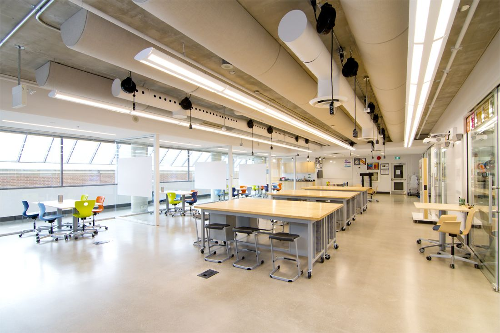

{% for event in site.events limit:3 %}
{% if event.banner %}
{{event.name}}
{% elsif event.image %}
{{event.name}}
{{event.intro}}
{{event.intro}}
STEM at UCC is a website built by the STEM committee which provides a central hub of information for anything STEM related at UCC - ... [placeholder] Some of the many exciting and innovative aspects of UCC’s IB curriculum involve courses that employ Design Thinking and Design Innovation, which focus on generating solutions to real-world problems. Design courses combine research, awareness-building about societal issues and implications, design creation, as well as prototype development and execution.